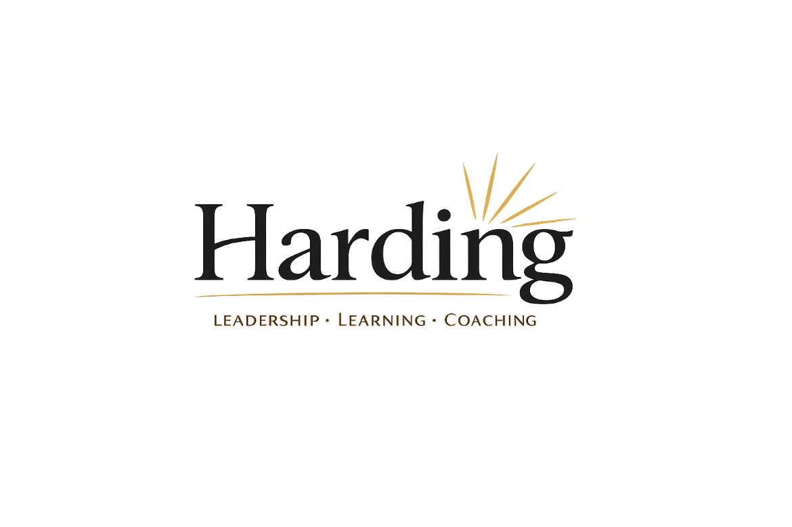

Helping school leaders
Scroll
with bespoke professional learning & INSET
leadership development & coaching
drawing on decades of experience
and the best thinking on adult learning.

Professional learning for schools
Helping school leaders
with bespoke professional learning & INSET
leadership development & coaching
drawing on decades of experience
and the best thinking on adult learning.